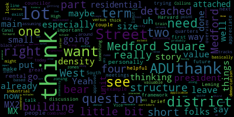
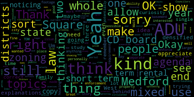
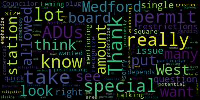
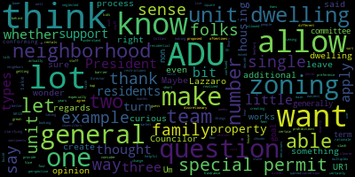

[Collins]: There will be a meeting of the Medford City Council Planning and Permitting Committee on Wednesday, March 12, 2025 at 6.20 p.m. in the City Council Chamber, second floor, Medford City Hall, 85 George P. Hassett Drive, Medford MA and via Zoom. Mr. Clerk, please call the roll.
[Hurtubise]: President Bears? Present. Councilor Callahan? Present. Councilor Leming? Present. Councilor Scarpelli is absent. Vice President Collins?
[Collins]: present. Four present, one absent. The meeting is called to order. Apologize for the late start this evening. We had the swearing in for Fire Chief Evans in the chamber immediately before this meeting, and folks were busy doing the good work of mingling after that event wrapped up. We didn't want to rush them out. So the action and discussion item for tonight's meeting is, as it frequently is, paper 24-033, zoning ordinance updates with the Innes Associates team. This is our 21st meeting on the zoning update project. We have with us Paola from Innes Associates, in addition to city planning staff, We have a couple topics for tonight. As folks who have been engaged in this process might be aware, we recently wrapped up the Green Score Zoning Proposal and the Salem Street Corridor District Zoning Proposal. Those have been ordained as of last night. The neighborhood and urban residential zoning proposal was workshopped in this committee over the course of four meetings in January and February, and we are working to find a date for a public Q&A for that topic, after which it will be sent to the Community Development Board to begin the public hearing process. Tonight we're going to cover two topics. We're going to start with a really high level introduction to a commercial framework for all of the city. Paola is going to walk us through a really bird's eye view of a way of looking at the commercial districts of our city, squares and corridors, major hubs. We are not going to be voting on anything tonight. This is intended as an introduction to this topic and an opportunity for councillors city staff and members of the public to state their initial questions, initial preferences, initial concerns for what they'd like to see in which areas, in which quarters, on which squares, what they'd like to see, what not they'd like to see, what questions they have. then City Council leadership, City staff, and NS Associates will take all of that feedback and work together to combine it into the next iteration of a commercial frameworks proposal for our next meeting on this topic. So we're going to go through that introduction with Paola, and then after that, Paola will give us updates to the ADU zoning ordinance to incorporate the new state law on ADUs, and we'll have a further discussion of other ADU zoning proposals. So with that, unless there are any initial comments by councillors, and seeing none, I will pass it over to Paula from Ines Associates. Thank you.
[Ramos]: Good afternoon, Madam Chair, if I may. So I'm Paula Ramos Martinez, senior planner at Ines Associates, and I will guide you through the presentation today. I will share my screen. And. So here we are today. We will look at, as President Collins said, we are looking at the, Vice President Collins, sorry, commercial framework today. It's going to be very high level view. I will walk us through it, but this is the first time that we bring it. So any comment, we will look more in depth every parcel by parcel as we've done with the others. And change whatever we needed, but this is just like the bigger hierarchy of the districts that we have been applying to the other commercial corridors. So Um, well, we talked a little bit about this. We will bring we have different ways than so for public to give their comments. This is one the planning and permitting committee meetings, but we also have the city boards whenever any topic is referred to the committee development board. community development board. Then there's another potential opportunity to comment from the public. And then we also are bringing some public Q&A for the different topics. We are proposing the 27th of March. This is still to confirm with everyone. but that is the potential public meeting that we will use to present the residential neighborhoods that we've been talking in the last four committee meetings. And then in March, we and then in April, we will talk about the squares during these continue planning. And permitting committee meetings, we will be talking about today the higher level of the framework of the commercial framework. Then we will start looking at the Medford Square, West Medford Square, and then other quarters. So that will be our schedule. We've talked a lot about this, so just to let you know that this month we will look at the commercial framework, the Medford Square. We will also bring the ADU some citywide topics like community solar, non-conforming, and then in April we will talk about West Medford and other corridors, and we will also talk about transport demand management, site plan review, and the neighborhood notes. And here's a little bit of the same this we will continue to update and whenever we have new dates for public meetings, or for the other moments where we can have public comments, we will bring the dates and publish them here. As we've been talking every time that we come here in the planning committee meeting, we say that we are doing an overview of the zoning based on what it was published and identified in the METFOR comprehensive plan that was published in January 2023. So we have some of the different goals that we follow for this zoning update, and we are following the vision that was done in this plan. If anyone is interested, what are the principles that we are following, why we're doing this, why specifically these areas is in this Medford comprehensive plan. So we were looking at the residential districts, and we are now in all those non exclusive residential districts so all the different areas where we can have this mixed use where there is commercial at this point where we have in the current zoning. C one C two. Um and that we have divided in quarters squares. We have the institutional where Medford tough says and then the special district that we will look also later for Wellington area. Um so this time we will look. We have already done Mystic Avenue. We just passed the Salem Street quarter and we will look into the other quarters and the squares in this next two months. So the current zoning, where we are looking in Medford Square in West Medford in Main Street, or other quarters, Boston Avenue. We are looking usually at the C one commercial one district apartment one district and apartment two district usually those are the ones that we are that we will be adapting. These we already saw but mainly apartment one maximum heights will be around four stories, well three stories for multifamily, four is just for assisted living, but mainly that's three, four levels. And then apartment two. It's six by right for multifamily and then other permitted principal structures. It's at 15. So that we will look into if it's correct, if that's what we need, if that needs to be changed. Those are things that we will look into as well as the areas, minimums that are required and if it's possible in the lot sizes that we currently have. And then the C1 as well is six by right for multiple dwelling and only hotel for some reason the height is 15 stories high. So those are the things that we will be looking at. if that makes sense, etc. So the uses that we are using or the districts or sub districts depending that we will be using are the same that we use for Mystic and for Salem. We are talking about mixed use one, mixed use two, and mixed use three. And what we have, the differences are on that level of intensity. So the one being the lowest and the three being the highest. Um, so I'm going to zoom in a little bit and then we talk obviously about commercial. We also have some commercial that is mainly on the Mystic. We will study if that is needed somewhere else. We also have the neighborhood residential three, urban residential one, and urban residential two that we've just explained in the previous neighborhood in the residential meetings. So if I can do a little bit more. Yes, so we are going to have a little bit more. Let's say that Medford Square is where we are going to have that intensity as well, where we will try to study if that is possible. But what we see is that on the east part of Medford Square, we will bring as well that mix use three. And let's see if it needs to be extended a little bit more. Um, on the outside will be we will try to have the mix use to this is also looking on what you have already and in the city. What is currently existing? And then the inside the really core of Medford Square and the lots are a little bit smaller. The footprint is little bit smaller, so we will look into that mixes one that is also connected to the one from Mystic that mistake Main Street area on the other side of the river. So we continue that scale in both sides of the river. If we go to West Medford, the lots are very small as well. So we try to keep it in that mixed-use one level. And then there are some areas, very little in the center there, where we could go to mixed-use two. So this is very higher level. We will go into the parcels and see if those are possible. Main Street is really, it has a lot of commercial existing, but they are very much distributed all the way. And they form some clusters. So where we have those clusters of commercial we kept that mixed use one. And then we start to feel the residential wherever we have that very much urban fabric residential typologies. We kept it as the urban one and if those were bigger multifamily, we went to urban to. And then we have that area south of Medford Tufts in Boston Avenue. There is some industrial at this point in the existing zoning. We believe that this could be a nice mix too. Again, we will need to study and listen to your opinions. on the north north side of Boston Avenue, almost in West Medford. There are some office at this moment. We would like to propose some mixed use too. And then in between from Medford Tufts to that office district, we have a lot of mixed from mixed use one, urban residential one. And there are some areas that are very, very small lots that are only Um, small houses existing, so we just left it as neighborhood three, and we have only those two areas, one above Medford Square for neighborhood three, that's the yellow one. And, and then this on Boston Avenue, that is towards the train tracks. So what is the difference between mixed use one is three by right, one plus one story will be with incentive zoning. For now, this is very generic, this might be adjusted depending on where we are. As we have done for Salem Street and Mystic Avenue, they are different. So we will look in here what needs to be adjusted depending on the areas. But generally, let's say, is three stories by right, one more with incentive zoning. We want that small mid-scale. And then in Mixed Use 2, we go four by right plus two incentive zoning. And it will be that mid-scale. And then Mixed Use 3 is six stories by right. We have six of incentive zoning. Again, we will look into the specific areas if that's what we need. and we talk about mid-high scale. The uses at this point, we just will be using the ones that were defined for Mystic Avenue and Salem Street and look at the areas and look what we need. But yeah, this would be that general overlook of what we are thinking and how we are making that hierarchy for all these commercial areas. So I think that I will give you now, yes, before we go to ADUs, if there are any comments, please.
[Collins]: Thank you so much for the overview, Paola. Really helpful. So like we stated at the beginning, this is intended as kind of a bird's eye view introduction to this topic. So I think the best use of our time in this meeting is kind of our first impressions, preferences, questions, and comments that Councilors are coming into this discussion with. I know I've gotten some questions and preferences from community members already saying, Why not this there? Why not this there? So we'll save public comment for the end of this topic. But I first want to recognize Councilors who have some thoughts on this kind of initial jumping off point. And I'll go first to President Bears on Zoom.
[Bears]: Thanks, I'll be brief. And I'll just say that I think especially for Medford Square and West Medford Square, trying to look at a little bit more density, I think, is important. So just I'll leave it there for now. I appreciate the framework discussion. I think it's a really helpful overview. And I have some questions about Harvard Street in South Medford as well. maybe a little bit of other questions about the main street and medford street quarters but i'll leave that for future meetings thank you great thank you president bears go next to councilor Leming thank you uh first just uh
[Leming]: So I understand that there are some issues with uploading the agenda to the portal, and that's being resolved. But we did get the current agenda circulated on March 10th, but I'm noticing, Councilors did, not the public, unfortunately, but I'm noticing that The copy that Inez is showing has the explanations of what mixed use 1, 2, and 3 are, so I'd appreciate it if you could circulate the presentation to us, although that could just be a more updated copy. But yeah, going back to that, could you, I did screenshot it, but could you zoom out and just show the explanations of mixed use 1, 2, and 3? Yeah. Um, so, so yeah, it makes, so it makes use three to be, to be clear that could be up to 12 stories with the right incentives. Okay. Um, and sorry, can you just, can you just show that, show the whole thing, the whole whole page? Okay. Yeah, I would generally agree with the idea that West Medford and Medford Square do need to be more densified. I don't think that's actually a word, but yes, densified, you get what I mean. So maybe upping that to mixed use two or even three. Out of curiosity, what was the original idea behind putting the very center of Medford Square at mixed-use 1, but the surrounding areas at 2 and 3, what was the, out of curiosity, what was kind of like the thinking behind that?
[Ramos]: So for Medford Square, especially in the center, the lots are very small. So we need to do some fit studies to see if we can really go to that mixes two or mixes even the three. And also is the continuation from what we have in Mystic and Main at the end. So it's a little bit of doing the mirror from the other side, of the river and to have that continuation from Main Street towards Medford Square to be kind of that lower scale. And then going to the other side is mainly what you have already, which are buildings that are four or even higher buildings and quite bigger on The west of Medford square. And then, yeah, it's a little bit replicating what it is already in the ground and see. as an idea to have towards the river, you can go a little bit higher, towards the 93, you can go higher, but just in the middle, it might be a little bit complex to do that. So again, if we think that this should be even a little bit more intense, we can absolutely study that.
[Leming]: Yeah, what would the nature of that study be? Sorry, what kind of study would you would you need to undertake to figure out if you can build higher there?
[Ramos]: We need to look at more of the parcels to do some sections, see if it's viable and feasible to do six stories or even higher. without giving shade to the areas that are around it. So we need to look at the street and see if that street profile, if we can go that higher without bothering the neighborhoods. So we will study if that is possible.
[Leming]: Is that the same situation with West Medford?
[Ramos]: Yes. Yeah, we will need to do that everywhere. We won't do per parcel, but we will take the representative, some of the type parcels. And then from there, we will do some quick studies of what would it fit the typologies that we need for a mixed building and how high we could go without shading the neighborhood and see if that is viable.
[Leming]: Okay, yeah, I'd appreciate to see the results of those studies. Thank you.
[Collins]: Thank you. Next, I'll recognize Councilor Callahan and then Councilor Lazzaro on Zoom.
[Callahan]: you. I'm just a little curious about the part that's near Magoon Square. And mostly, I apologize, because I was looking for a previous map that you had that showed like the existing heights and structures. And I apologize, I can't find that right now. But I'm just curious for that urban residential to at the very bottom of the map is that one that's that's, you know, just just north of Bow Street, The furthest south wine red urban residential. Sorry. Yeah, the furthest south wine red one. I'm just slightly curious, like whether that is like existing buildings, like similar to existing buildings, or if this is like where we're going to hope for growth because it is close to T-stops down there and Boone Square and everything.
[Collins]: Actually, that was a motion or a request that I made during the UR slash NR discussion. I offer that if that's helpful.
[Ramos]: Yeah, so in here also the idea was that in these corridors we will have a little bit more density than what we have in the neighborhoods to have a little bit of more transition. In that area we have in the neighborhoods around it, the urban one. So that's why that's a residential or yeah, that is a residential area of the corridor. Some existing, maybe they have already multifamily and that was also why we did it. but we expect to have a little bit of more density on the corridors than on the neighbors. And so when we have a neighborhood three, we place the urban one in the corridor, and when we have an urban one, we try to do the urban two.
[Callahan]: No, I totally get that. I'm actually just asking about the existing buildings.
[Ramos]: I need to look into it. I'll try and find that map, actually. I will look into it. We did look into the existing buildings. So sometimes it's the area that we think that it can go a little bit higher density. And sometimes there's already multifamily buildings. So then we just continue conforming what is already there.
[Callahan]: No, I think either way is great because it is close to some of these MTA stations that are not in Medford, but are clearly affecting, we should be building there. I was just a little bit curious, thanks.
[Collins]: Thank you, Councilor Callahan. We'll go next to Councilor Latero.
[Lazzaro]: Thank you. I just wanted to thank you all for talking about this. And I've just put in a quick plug for what Councilor Leming was mentioning about West Medford. I know, sorry, I know that I, you know, A lot of this depends on the size of the lots. I recognize that you have to look into it more. I just think that West Medford Square in particular, because of the positioning of the station there and the proximity to North Station, I think we really have to emphasize the potential for greater density of that commercial area. So I would just really want to prioritize that. Thank you.
[Collins]: Thank you, Councilor Lazzaro. In my comments, I'll be brief. I know I received a couple of comments from community members earlier this week, requesting specifically more density in Medford Square and West Medford Square, and I hear that reflected in the comments from some of my fellow councilors. Of course, we know that what exactly that means, what sub-district that means, how we're going to tailor it to specific squares and specific corridors will depend on where it's going and will depend on the research that Paula's already said she's going to do of lot size and what is feasible, kind of scaling down what we decide we want, the consensus we come to, to what is actually feasible on the lots in these specific locations. the city. Um but I do think in keeping with the goals, I think that here we have to in every part of the city that we look at that we rezone. We have to be focused on the goals of, um. Allowing for the type of development and density that we want to need in these specific places, and we also have to be keeping an eye on parity between all of the zoned much differently, given a different treatment than another, and that each area is able to enjoy the same potential for commercial and residential development and not left out of that potential. I also wanted to note, and also I see that the section on the The section to the west of 93, north of the river, that's currently penciled in as mixed-use 3, I just wanted to note, I think it's really interesting to be able to consider using mixed-use 3 zones along 93 where it's appropriate, and I think that there's a potential benefit there. where taller buildings could serve as sound insulation and kind of aesthetic insulation from the highway, from people who are living or just doing business or being around in those abutting areas. So I'm really eager for us to look at using those lots along the highway to concentrate more development, taller development, city. When we go when we go tall, near the highway to block it out. It's also the point was made to me recently, I forget by who, that when you are developing at those level of heights, that's when the economics really makes sense for the kind of air filtration and soundproofing that can make quality of life inside those buildings better. Lastly, I just wanted to note I forgot to mention this at the beginning of the meeting, but the map that Councilors and community members are looking at tonight. A lot of this is the proposal. Some of this reflects proposals that have already been made in the case of some of the neighborhood residential and urban residential. Parts on this map, that's part of the proposal that's going to the CD board next. And as I think we're probably all aware, the Mystic Avenue corridor and the Salem Street corridor reflects zoning that was done earlier in the citywide process. So I just wanted to make that clear for folks. A lot of this is just our jumping off point that we will further workshop and change and tweak and become part of the proposal. And some of it along Salem Street and Mystic Avenue in particular reflects rezoning that we've already done earlier in the year. I'll go back to President Bears.
[Bears]: Yeah, thank you. Just a couple things. I think one, when we talk about lot size I think we need to be also thinking about Like, for example, in West Medford, the lots that are basically small industrial buildings between Canal Street and the train tracks and High Street, right? Like, those lots, as they exist today, maybe couldn't bear something that they could bear if one or two were combined. And so I don't want to limit the zoning based on assuming that lots are going to stay the way that they are. And just two other things. I think it might be valuable to put like a thick black line or some other demarcation to Vice President Collins's point around the zones that have already been approved versus the ones where we're discussing them going forward, just so that folks can see what has been done already and what needs to be done. And then just third, I think there's, as part of this, I think, and I've mentioned this before to folks, but I just want to bring it up here. I think there's some value to thinking about a UR3 district that would be a four-story by right, and I can't think of a better name for it than to say an MX2.5 district that's somewhere between the MX2 and the MX3 district in terms of intensity and density. just because I think we're now getting into the place where there are parts of the city, especially in Medford Square and along Main Street, and in West Medford Square to an extent where we just need a tool that's a little bit more dense than the MX-2, but not quite the MX-3. And I think that there's probably value to a residential only four story structure in some parts of these corridors where it wouldn't be applicable in a neighborhood. So just want to put that out there as well.
[Collins]: Thank you, President Barras. Looking for fellow comments from Councilors. This is a great jumping off point. I think that this gives us kind of enough to get out of the starting blocks on tweaking this initial proposal. And I believe double check with Paula but I believe that our next meeting in two weeks we can probably expect to see a revised version of this map, including just some formatting changes to make it clear to Councilors and residents, which parts of the map have already been updated which have not. And we might see some changes as well, perhaps in sub districts. Along the lines of President Bears his comment or begin to see tweaks to the map. Based on Councilors and community members feedback for what they'd really like to see prioritized in each of these squares and corridors.
[Callahan]: Go ahead. I know no one ever likes whatever colors you choose. I apologize, but I do wonder if it would be possible to make the like mixed use and commercial, you know, somehow make them like the neighborhood residential being like yellow, green and red, like all possible primary colors like is a little hard for me to tell where is residential versus where is, you know, there's possibility for commercial and I don't know if there's a way to make that slightly easier to grok. I have to keep going back and forth. It just doesn't make sense in my brain. If it's not too much work.
[Collins]: Thank you. Great, thank you, Councilor Halihan. And as Councilor Leming noted, we're having some trouble getting the agenda files published for this meeting. I'm not sure why. I was inside Civic Clerk just at the beginning of the meeting. The agenda files are there. They're not on the public side of the portal. I apologize for that. We will make sure that is figured out ASAP, and I'm sure that these Files that we're looking at tonight will be viewable by everybody by tomorrow. And we will also make sure that the updated that the version of the of this map that Councilors received on Monday didn't have the legend on it will make sure that the public portal is updated with the one that does have the ID for what each of the MX sub districts mean. So apologize for the technical difficulties. We will make sure that the publishing function on Civiclerk is fixed ASAP. Great. Seeing no further comments from Councilors. Thank you for your initial feedback. So far, I look forward to seeing this in its next iteration and I think it goes without saying to anybody who's engaged with this process enough to be a part of this meeting, but I do just want to reemphasize for folks. I think sometimes when we see these zoning proposals come out you know a piece here a piece there can sometimes be confusing. Why is this quarter colored in and this current quarter isn't why is. This is certain color and this is blank. It is because that we're, we're kind of breaking the city into its different, you know constituent parks, which are corridors which are squares which are squarely residential which are kind of none of the above. and we're taking a different approach to each of those. So if you happen to be looking at your street and you're saying, why are they talking about that? It seems like they should be. It's likely a part of a different discussion. And of course, if you ever have questions, if you have further feedback on this proposal, you can always feel free to reach out to city councilors in between these meetings and we're always happy to clarify. see no further comment from city Councilors on this part of the presentation. So before we move on, I want to take Oh, sorry, I didn't invite participation from city staff. Is there any feedback or notes that you want to put on the record at this time? No pressure.
[Hunt]: Madam Chair, I'll just say that there are a couple of like little tweaks that are kind of technical that we're gonna send to the consultants and all and figure out before we bring them to the council. Just every time we look at these things, they're so detailed, we see something else. So I was literally just writing up one of these tweaks that I need to work out with them, so.
[Collins]: Great, thank you, Director Hunt. All right, we will go next to public comment. We're eager to hear your thoughts on this very initial framework, which is due for a lot of tweaking and feedback. I will alternate between the podium and Zoom. Every speaker will have three minutes. I will endeavor to give you a 30 second warning. Name and address for the record, please.
[Navarre]: William Navarre, 108 Medford Street, apartment. 1B. I just have a few points. Councilor Bears sort of alluded to this earlier, President Bears. I think that four stories along corridors would be a good idea whenever it's like residential, the four stories. I'm mostly speaking of when you actually are fronting directly onto one of these corridor streets. I think you could go up to four stories. I think that's good. I agree, we really need the extra density in the square, especially Medford Square and West Medford Square. West Medford Square is quite small and surrounded by relatively low density compared to say, Salem Street. So I think the intensity there needs to be higher than what was done at Salem Street just to support those businesses, or else it's not going to work, I think. They've been struggling, I think, to fill those spaces more than for example, on Salem Street. Oh, One thing is I would not worry about matching Medford Square to the area to the south of Medford Square. I really wouldn't, because I think by the time you've gone underneath the Mystic Valley Parkway, you want to forget that you were ever by the police station by the time you're over there. It's a totally different world. And don't fret about that. There's no need to. I don't think there's anybody who thinks those should be consistent at all. Two floor, this is a crazy idea, but I thought I would ask if the consultants wanted to study, what would it take for us to have in some of these areas, particularly West Bedford Square and parts of Bedford Square, two floors of commercial rather than just one? How much housing would you have to allow above in order for that to pencil out? It'd be really cool if we could have like dentist's office and lawyer's offices upstairs off of the ground floor. And if that means we have to have a whole ton of housing, well, we should still consider it anyhow, because it'd be pretty nice. So those are my suggestions. Thank you.
[Collins]: Thank you, William. All right, we will go next to Zoom. Gaston, name and address for the record, please. And you have three minutes.
[Fiore]: Thank you, Madam Chair. Gaston Fiore 61, Stigney Road. I just wanted to echo the comments that Councilor Lazzaro mentioned. So West Medford Square, as I see it in comparison to the rest of what I'm seeing here, the corridors and Medford Square is heavily underdeveloped. We really need to increase the density over there in particular, because the low wall line It's only one station away from North Station and it's 11 minutes in the train. So Medford Square does not have that. We only have buses. It's very congested during both rush hours. West Medford Square, they're lucky to have rail that serves that square. And we need to exploit that. We need to take advantage of that. And right now what I'm seeing is that that is not the case at all. So I would encourage everyone to increase the density over there and take advantage of the fact that we are 11 minutes away from North Station that connects everywhere in Boston. Other than that, I think this looks good for now. And I thank everyone for the work that they have put. Thank you so much.
[Collins]: Great. Thank you, Gaston. We'll go next to Cheryl. Name and address for the record. You have three minutes.
[Cheryl Rodriguez]: Hi, Cheryl Rodriguez, 21 Park Street. I'm just looking at this map, and everyone's saying the lots in West Medford are super small. They look substantially larger than Haines Square. I took a sampling from the accessibility database, and I'm not sure why it stopped so abruptly at the the last commercial buildings as they can go all the way down to the rotary if you want corridors. It just seems like you may be treating some neighborhoods different than other neighborhoods. If a busy corner of Park and Salem that can't stand any more traffic is supposed to sustain six story buildings, then I think West Metro can handle it with their commuter rail stop and buses. Thank you.
[Collins]: Thank you, Cheryl. All right, seeing no one at the podium, we will go with Zoom. I'm going to ask you to unmute, JMN. Great. Name and address for the record, please, and you have three minutes.
[Jean Nuzzo]: I think it will actually be brief. Jean Nuzzo, 35 Power Street. I'll iterate what I've iterated before at other meetings. It is important to execute the necessary studies because while it's nice to have blue sky ideas for what needs to happen, these areas do have some vibrancy. And while you would bring in potential other businesses here, you will get rid of the mom and pop stores if you do not appropriately plan for that. In the age of information, willful ignorance really shouldn't be dismissed. There's a lot of opportunity here, especially in proximity to the transit station that, as someone else has said, is in fair proximity to Boston. Many people use this rail, and the opportunity for many more makes sense. But we also need to be purposeful, unlike what we did to Salem Street. We should be a little bit more careful elsewhere. And definitely there is a discriminant and different handling of these neighborhoods. The tone and the tenor that's being discussed here is nothing like what was discussed on the other side of the city. And I find it unjust and reprehensible. Thank you.
[Cheryl Rodriguez]: All right, thank you, Jean. And it's unjust and reprehensible.
[Collins]: All right, we will go to J.R. Elliott on Zoom. Name and address for the record, please. And you'll have three minutes. I'm asking you.
[John Elliott]: There you go. My name is John Elliott. I live at 34 Emery Street in West Medford. I'm concerned that this drawing that we've been looking at is incomplete or not yet finished. And that's because I spent a half an hour, half an hour, no, half the afternoon with it. and found too many cases of buildings that I knew were there, but that weren't allowed by the zoning as it was depicted. So for example, Boston Avenue 123, 5, 7, and 9, which is a real estate broker, a restaurant, hair salon and an acupuncturist. And those are in a location that doesn't allow any mixed use or anything, but it looks like it doesn't allow anything but residential area. I think there are four or five apartments above those businesses. So that's clearly a mixed use situation. 15 Canal Street is a Medford Housing Authority building with I think 17 units. It is in a location that doesn't allow such a thing, I don't think, according to the drawing that we're looking at. 29 Harvard Ave is the same situation. It's a 40-unit building, and it's only four stories, but I don't think that's allowed in the coding that appears there. Um, there, there are other discrepancies that I'll, I'll put in writing and, um, and send to the, to the board. Um, but is, is this drawing fairly nearly complete?
[Collins]: Uh, you have a little less than a minute left. Uh, please feel to feel free to ask any questions and I'll answer them all at the end.
[John Elliott]: That's enough.
[Collins]: Okay, great, thank you so much. Just didn't wanna cut you off on your time there. No, this map is absolutely not finished. This is our very first meeting on the commercial framework. And the intent of tonight, as I stated at the beginning of the meeting, is for this to serve as a jumping off point. This is kind of our first crack at looking at the totality of the commercial framework. So your comments are extremely welcome. The point of tonight is to get this kind of initial feedback, impressions, questions, concerns, with this draft of a commercial framework. Our goal is absolutely not to down zone any part of the city through any of these proposals. So if there are aspects on this map where inadvertently a mixed use area is not included as a mixed use zone, that's something that we'll absolutely want to check and make sure that's not the case because any area that's already mixed use, certainly it's not the intent of the overhaul to decrease mixed use uses in the city, we want to increase them where they make sense. And another goal is to decrease non-conformities. So if you're noticing them on the map, please do put them in writing. You can send them to Director Hunt and myself and we'll make sure that we look at them and make sure that they fit in with this plan. But to your overall point, this is by no means final version of this map, we're actually going to be going square by square, corridor by corridor, to make sure that the new subdistricts and the uses are tailored to each specific square and corridor. So this is intended as kind of a 30,000-foot view. We'll collect all these questions, concerns, and then we'll go granular on each area. So thank you for your comments, and don't worry, we'll be talking way more about this before we take any votes. Is there any additional public comment on Zoom or in the chambers before we move on to our second topic for the evening? Seeing none, thank you for your comments. We've been taking copious notes, and I'm sure that we will have a very interesting updated version of the commercial framework map for our consideration. or a portion thereof for consideration at our next planning and permitting committee meeting. And I also do just want to clarify, depending on what makes most sense for the council's workflow, we might see a updated version of this map in its totality, or we might kind of dilate the telescope onto a specific square or corridor like we were talking about. Great. Thank you all so much for your comments. Paola, I'll turn it back over to you and we can begin our discussion of the updates to the ADU ordinance.
[Ramos]: Thank you, Madam Chair. So the accessory dwelling unit, so the state passed a new law for a protected use for the accessory dwelling unit, ADU. So I'm going to just have the the very summary of what needs to be done from the municipalities point of view. And now that we are revising the zoning, we are going to also update the ADU ordinance. So municipalities cannot prohibit, impose a prohibited regulation or unreasonable regulation or accept as provided under the 760 for the use of land or structures. CMR 71.035 required a special permit permit waiver variance or others only relief or discretionary zoning approval for the use of land or structures for a protected use 80, you. Including the rental thereof in a single family residential zoning district provided that municipalities may this set law. And so I'm going to now go through what regulations cannot be applied. And so for example, owner occupancy requirement cannot be applied. There is the minimum parking requirement is only one parking per dwelling unit per ADU if it's outside the zero half a mile of high frequent transit. and zero if it is within that half a mile of frequent transit. There cannot be use and occupancy restriction. The units gap in density, so this is mainly to say that ADUs should not be counted in a density calculations. So when we say this district cannot have more than, it's for one in three units, ADUs do not count to that. and the relationship we cannot establish the relationship between the principal dwelling and the ADU. So it cannot be required to be attached or detached or new or already existing. The dimensional standards cannot be more restrictive than it is required for any of the following, the principal dwelling, single family residential or accessory structure. And so this means that if the height of the principal dwelling is 2.5 per minute, the ADU can be 2.5. Now, there is a restriction for the area, the square footage of that ADU, which is 900 square foot or half of the footprint, the gross floor area of the principal dwelling. Whichever more restrictive. And that is for the protected 80 you the municipalities can do changes, and we will see them later. In historic districts, the municipalities could establish design standards and dimensional standards for protected use 80 years that are located in such districts. existing nonconforming structures, a municipality may not prohibit the development of a protected use ADU in an existing structure or principal dwelling or lot due to nonconformance. So if there's a lot that is nonconforming and there is a residential, a single family, for example, that want to have an ADU, just because it's in a nonconforming, the municipality cannot prohibit that development of an ADU. Special permits for multiple ADUs on the same lot. If a municipality chooses to allow additional ADUs, this doesn't mean that you have to. This is choice for the municipality. As protected use in a single family residential zoning district, the zoning shall require a special permit. This means the protected use is for one ADU minimum. municipalities can decide if they want to add or give permission to have more than one. In that case, they will need to be by special permit, not by right. So what are the municipality decisions? Those are the minimum requirements for the ADUs because it's a protected use now. You can have your what they call in their regulations, the local 80 use and so municipalities may allow accessory dwelling units in any other residential district and those can be by right or by special permit. It is required to be The minimum, the protected use has to be in a single family district by use or by special permit. So you could have in any other residential district, you could allow and ADU. Municipality can allow bigger ADUs than that 900 square foot restriction. So you can allow 1,200 square foot ADUs. And municipalities can allow additional ADUs on the same lot by special permit. This is what we said. And the short term rentals, municipality can establish restrictions and prohibitions on that short term rental. So that is completely up to the municipalities. if they want to have Shermton rentals for ADUs, but they can also prohibit. And those are right now that summary of where we are now with the new law. protected use. So right now, just yesterday they presented the model zoning for accessory dwelling units. So now we will review that model zoning and check how we will apply it and bring a draft with that new model zoning. we got from the Councilor Leming an updated version of what they were working with the city for a new ADU. And a lot of the things that were proposed are right now mandatory. So we will bring that draft following this new law. Any comments? Any questions? Very happy to answer them.
[Collins]: Thank you, Paola. So just to repeat that back in simplified layman's terms, for those less familiar with this topic, the new state law places several new mandatory regulations on cities. around essentially that we are not allowed to prohibit ADUs in these new sets of circumstances. And so we are updating our ADU ordinance to be in compliance with the new state law. Beyond that, there are several options that we can take for ways we might want to tailor. construction the use of ADUs further based on our specific zoning. So it strikes me that the work before us is to essentially approve the amendments to our existing ADU ordinance, incorporating the mandatory updates from the state, and then to make those decisions on ways that we might want to further handle the treatment of ADUs based on the decisions that the state is leaving up to municipalities. I'm sorry. I don't know if that's correct. Um do I have a correct that a lot of the updates that were suggested in the new draft 80 ordinance from Councilor Leming. It sounds like many of those have been covered by the new state regulations. Is that correct?
[Ramos]: If not all So, yes.
[Leming]: So a decision that we can make, and this is, sorry, there was a lot of text on those slides, and I'm also just trying to remember from the last time this was discussed. But one discussion that we can have is whether or not to allow ADUs by right in districts that do not have single family homes, correct? Yeah, I would personally favor having ADUs by right in those districts. That's just me personally, though. And it's not a thing to allow a second ADU by right. You always have to go through the special permitting process, which would be the CDB, the CD board here, correct? Does it have to be the CD board? Or could it be some other body?
[Hunt]: So when you're deciding who can be the special permit granting authority, we can put in any of this Community Development Board, the Zoning Board of Appeals, or the City Council. I think the City Board makes sense because it's a planning decision as to whether, where it should be. I feel like anything that goes to City Council becomes political versus what makes good planning sense. And that the zoning board is really more of a legal aspect, and they don't think about sort of the context as much. But honestly, it is the decision as part of the zoning as to who to make the special permit granting authority.
[Leming]: Yeah, it should not be the city council like this should I would vote against this.
[Hunt]: If you want to add something to that.
[Leming]: Yep.
[Evans]: So I was at the information meeting that they shared the model ordinance to and there was a lot of questions and answers and it confirmed a lot of things that I wasn't sure was in the act or not. But I do think it would be good to be the CD board because this is the AD, the protected use AD use is part of the Dover amendment now. And so if it was, there would be opportunities where the board would have to make the call of whether a regulation was reasonable. And one of the examples I could think of is front yards. Right now, we don't allow accessory structures like garages or sheds to be in the front yard. And we actually have an example where someone was looking to put an ADU at their property, but it's unusual. It has two, basically it fronts on two public ways, and it's set way back, but the front yard, technically it's, the front yard is The only place to put it basically would be in the front yard, which we wouldn't allow. So instead of going for variants, I think it would make more sense for the CD board to grant the relief that that isn't a reasonable regulation for that specific ADU. So I think that would make the most sense.
[Leming]: So CD board. Sounds good. Great.
[Collins]: Thank you. Sorry, Councilor Leming.
[Leming]: Yeah, the other thing, and this is, I don't know if this was part of anything, but I do remember from the conversations over a year ago that there was some requirement that an ADU couldn't be more than some percentage of the overall property. Is that still in state law? It couldn't be bigger than the square footage of, like, 50% of the square footage of the property? Like I think that was in the old state law and I'm not sure if that continued over.
[Ramos]: Yes, so the maximum area for the ADU is the 900, or half the gross floor area of the principal building. And that is counting all the square footage of that principal building. So all the floors, you do the sum, and half of that, or 900, whatever more restrictive.
[Leming]: OK, so that's still in state law, then?
[Ramos]: Yes. But municipalities can choose to increase that number.
[Leming]: Wait, wait, sorry.
[Ramos]: Municipalities cannot be more restrictive than the law, but can be more permissive. So you could choose to have a bigger number if you want to.
[Leming]: OK, so.
[Ramos]: Larger, yeah.
[Leming]: OK, so we can we can choose to make ADUs larger than with the stay law.
[Leming]: OK. Got it. Yeah, because there's this weird issue that some people run into where you can have a basement ADU if it's a two-story place, but you can't have a basement ADU if it's a one-story house. I think there are things like that where people were getting into, if I recall. So just anything to avoid cases like that would be good. Anyway, yeah, thank you. So sorry, in summary, would like it if we could allow ADUs by right in districts that only have multifamily housing or no single family housing.
[Collins]: great. And I do think that gets to one of the questions before us. Um, but we're not bound by state law. One of the things that is up to the city of Medford. Um, should we allow 80 years in any residential district, not just the districts where a single family housing is allowed by right? Um, so we hear recommendation from Councilor Leming, um, to paraphrase you that we should Go next to a couple of our non voting members on zoom Councilor Lazzaro, and then we'll go to Councilor Tseng
[Lazzaro]: Thank you. I was wondering if somebody could potentially, if I could ask through the chair for some comments from Director Hunt about the CD board and the amount of like obligation we might be placing on them to, like if we're putting, if we're obligating them to take on too many questions, is it prohibitive the amount of, the number of issues it may be under the purview of the city board to look at if we have special permits for a lot of these decisions? I guess I'm curious about like, when it becomes functionally not allowed that ADUs could be put on various spaces because they need a special permit. And then what ends up happening is nobody does it because it takes four months to get on the agenda. It takes too long to cover the thing. It gets continued. It's not worth trying.
[Collins]: Thank you, Council Liz Howard. So to paraphrase, and please let me know if I captured your concern correctly, I think I'm hearing a question about if allowing ADUs beyond what the state mandates, if we're making those by right, sorry, if we're making those by special permit as opposed to by right, if that is gonna be prohibitive to people actually following through on those projects. Planner Evans or Director Hunt, can you speak to a recommendation on that?
[Evans]: Are we talking about the additional ADUs that we might want to allow by special permit? Because the other regular protected use ADUs we can't allow. We can't require a special permit. They're by right, so it doesn't go to any board. It's just a building permit. It doesn't go to anyone.
[Collins]: I think there's maybe two questions here, because the ADUs in districts where single families are allowed by right, the ADUs are allowed by right. I think the two questions before us are, If we decide to allow ADUs in other residential districts where there were single families not allowed by right, do we want to allow ADUs there? And if so, should it be special permitted or by right? And then in addition to that, if we're allowing a second ADU, are those by right or those have to be by special permit?
[Lazzaro]: I see. The question is really more like, how many ADUs would we want to permit by right? Or would they go to special? This isn't every single. I see what the issue is. So it's not that we're not adding on restrictions. You can't add on restrictions because the state law is that ADUs are allowed on single family homes by right. And we can't take that away. OK.
[Evans]: That's single family districts. So my district's multifamily home could have could have an ad you if single families are allowed in that district.
[Cheryl Rodriguez]: Oh, okay, great. Thank you.
[Hunt]: One of the things we wanted to clarify, and honestly, I was gonna shoot it in a note to the consultants first, but it's our understanding that, so for example, in this district's neighborhood residential three, which happens to be on the map that we had with us this evening, where it lists single dwelling unit plus ADU, because single dwelling units are allowed in that district, it is our understanding that also the two units, the three units, the townhouses, and the historic conversions all have to allow ADUs by right. So we should redo how we're displaying it on these, because the way it's showing implies that only the single families would have an ADU, when actually maybe it should just be another bullet that ADUs are allowed on any principal dwelling in the entire district. And I'm just using that one as an example. So I think then the question is, so because this map is in front of us, where it lists Urban Residential 1, which does not have single unit dwellings. So in Urban Residential 1, the state is not requiring us to do ADUs by right. We could choose to allow ADUs by right, but it becomes a little complicated. But I think that because we're making the choice, we would have the ability to say that two units or three unit dwellings could have ADUs, but a multiplex or a townhouse would not have an ADU. And honestly, you kind of look at a townhouse and say, wouldn't that be weird? But a multiplex, four to six units plus an ADU seems odd. but in some of the neighborhoods. Do any of the neighborhoods go to? No, none of them have multiplex. Because I don't have all the lists.
[Unidentified]: Oh, I do up here.
[Hunt]: Right, so the urban. one and two of multiplexes, but the neighborhood residentials do not have. They just go up to four units. And that's only in the historic conversions. But honestly, a historic conversion is a place where you could imagine that you might convert the main big house into multiple units and then put an ADU and a carriage house outside. It could be inside, but it could be outside.
[Collins]: Sorry, we should probably be both speaking into the microphone.
[Hunt]: Right, so what she's pointing out is that if you had a historic conversion in a neighborhood residential three, so say you have a very large existing house and you actually want to cut it up into four units without adjusting the outside, that's what the historic conversion would be, you could in fact get a fifth unit by calling the fifth unit an ADU. under the state law. As opposed, that's not Medford's way of doing it. We're not telling you you could or you should. We're saying that's state law. Right. Does that kind of get at some of the details? I think then the question is special permits, right? So if you said, well, let's allow them in urban residential one and two, Sarah Silver, PB – she-her-hers): You would have you could allow them by right or you could allow them by special permit, and I think what i'm kind of hearing from Councilor Lazzaro is. Sarah Silver, PB – she-her-hers): Would that be putting so many special permits on the CD board that it would take a while to get on the agenda and. I don't know if those are covered under 40A. Most things, we can't delay them. So like by the time the permit is, the application is complete, it starts what we call a shot clock that you have to open your hearing by a certain date. So you can't put them off too long. And we typically don't. I mean, the CD board now meets twice a month because of the volume of work already coming to them. although we'd prefer not to have four hour meetings every two weeks. Go ahead, Planner Evans.
[Evans]: And I would also add that if another SPJ also can't expedite it because 40A has notification requirements or would have to run the paper for two successive weeks for a special permit. So if, say, city council was the special permit granting authority, you can't waive that two-week period of advertising. So I'm not sure if it would be quicker. we don't hold things back if people get on the agenda, if they've submitted their stuff on time. But it's a thing that could be looked at, but I feel like it is a planning kind of... Yeah, thank you.
[Collins]: If I can zoom us... Oh, sorry. I'll go to you in just a second, Councilor Tseng. That's really helpful, and I do think, especially for people who are new to this topic, it can be a little bit confusing. I think that there's kind of a flowchart of options before us. There's the bulk of this, we don't have an option on because it's state law. In any sub-district that allows single-family homes by right, we must allow ADUs by right for all types of housing within that sub-district, not just the single-family homes. I think we kind of have a short flow chart of decisions before us that are under our jurisdiction as a city. Should we allow ADUs in any residential subdistrict, not just the ones that allow single family homes by right? If so, should they be by right or special permitted and should be tried to tailor by on what lots, they may occur either by right or by special permit and I do agree with the comments from our PDF staff that there are some types of structures, especially in you are one and you are two or just wouldn't make any sense. to have an ADU on one of our denser housing, on one of our most dense housing types. I think the next major decision bucket is should we allow a second ADU on lots that already have one, by special permit, and if yes, in what districts? There's another question. Who should be the special permit grant authority for ADUs that are specially permitted? It seems like the clear recommendation there is it should be the CDB. I would agree. Do we want to allow ADUs that are bigger than 900 square feet or more than half of the floor area of the principal area? And if yes, by right or by special permit? And then finally, we haven't even touched on this yet. Do we want to consider a short-term rental option for ADUs and what would the recommendations for regulations be there? So far, our conversation has been mostly around those first three questions, but I did just want to orient us in the questions before us so that when we leave this meeting and as associates kind of has a better all of the feedback that they might need to start drafting the updates to the ordinance for us based on the stuff that is under our jurisdiction. So eager to hear more comments from councilors on kind of the three main questions. In my mind, should we be allowing ADUs in any residential sub-district, not just the ones that allow single families by right? Should we be allowing a second ADU and special permit and in what districts under what conditions? Go next to Councilor Tseng and then President Bears.
[Tseng]: Thank you, Vice President Collins, for making this a lot clearer. And thank you to Director Hans and the team for clarifying some stuff that was on the map. I was a little bit confused about whether or I thought that the ADU wouldn't apply to the two-unit dwellings and three-unit dwellings and so on. So it is helpful to know that the ADU does apply to all the different types in the NR123 neighborhoods and I certainly support that. I think in general what I hear from residents is that they want to be, folks want to be able to do more with their property, especially in terms of creating more housing. There are a lot of folks who I, neighbors and residents I talk to who Want to be able to turn, you know, something into an 80 you they want their kids have moved out and they want to be able to, you know, live in the house that they own, but also to do more with that property. And so I think 80 years are a great way to do that, which is why. In general, my preference is to allow them would be to allow them in any residential neighborhood, even if there are not single family, single unit dwellings there. I think in general, for example, if we're taking you are 1. If we're looking at the 2 unit dwellings. It wouldn't make a lot of sense, in my opinion, to not allow that for a two-unit dwelling in UR1, but to allow that in our neighborhoods. So I think that's just my perspective on it, on question one. I also, in general, I understand. I'm not sure how this works. Maybe this is a question for the zoning team, but I wonder if there's a way to allow, for example, in UR1, to allow ADUs by right for certain types of dwellings and then to make it by special permit for the multiplex. I'm not sure if that's allowed or if we just have to decide it for the whole neighborhood. I'll leave that up to the zoning team, but that's just a question that I had. With regards to questions two and three, I am a little bit curious. I know 900 square feet is the number that we've chosen. I know it's a number that the state has said. I'm curious what the rationale behind 900 is. I wonder if there's a number that works better for Medford, or whether 900 is just the one that makes the most sense. With regards to additional ADUs on the same lot, I think my thought is that if it makes sense for that lot, the special permit process, in my opinion, I think this is what Councilor Lazzaro was getting to, is that oftentimes it can just be an additional barrier to people who would otherwise want to create an ADU. A lot of folks don't exactly know how to go through the special permit process. Maybe the weeks slash months it takes is just a hindrance to them, and I think that's something to consider as well. I generally leave it to this committee to make a lot of the discretionary decisions, and I have a lot of faith in this committee and in the zoning team. I just wanted to provide support for those things and to the sentiments from other councillors, from Councilor Lazzaro and Leming.
[Collins]: Thank you, Councilor Sheng. Go next to President Bears.
[Bears]: Thanks. Yeah, I think for me, certainly as to question one, by right for detached in any residential district and by right for attached or detached in the NR districts or for anything other than a multiplex, I think makes a lot of sense. For question two, I'd like to see that go up to 1,000 or 1,100. I think that's a more reasonable size of a single, relatively small apartment unit. For three, personally, I would just only be interested in seeing two ADUs on the same lot if it was, if there was an attached ADU and then there was a detached ADU to preserve a historic structure or an accessory structure. I don't really see the need for multiple ADUs on the same lot. And then for four, I personally would not want to allow ADUs to be short-term rented. I think the short-term rental has been a really tough impact on the housing market and it's just not the way to to move on that. I don't think we want to see people building a lot of these units for short-term rental purposes. I think we want to see them building them to make sure that people can live here year-round. Thank you.
[Collins]: Thank you President Barras. Go back to Councilor Tseng.
[Tseng]: I realized that neglected number four I think I generally agree with President Bears. Um, we, I think the goal with zoning in general is to get more units on the market to lower housing costs that way. And I think, um, If we, you know if if we didn't have restrictions or prohibitions on short term rentals that that cuts against our goal. I did actually have a question for the staff. Under this proposed zoning change, let's say you have a family with a non-conforming, let's take your one. Your one is the easiest one to use as an example, I guess. Let's say you have a non-conforming single-family unit, but they do want to create an ADU. Now, let's say that we allow it either by special permit or by right. Would they be able to get an ADU or to build an ADU even if they don't turn the main dwelling into a two-unit or a sort of conversion or whatnot?
[Ramos]: So according to the law, and if we propose this for the protected ADU, we will recommend to also propose for the local ADU. We cannot, municipalities cannot prohibit development of that ADU in a nonconforming structure. So they could build, if they live in a nonconforming single family in the UR, one or two, it doesn't matter, they will be able to build the protected use ADU if we allow by right or by special permit ADU in that district.
[Collins]: Oh, sorry, we couldn't hear your last comment, Councilor Tseng.
[Tseng]: Oh, I just said thank you so much.
[Collins]: Great, thank you for the question, Councilor Tseng. Go next to Councilor Leming.
[Leming]: Thank you. What's progress been like on, or what do you think the ability would be to enforce any short-term rental bans in ADUs? And do you think that, because I have heard it's been kind of difficult past, so practically speaking.
[Hunt]: So, Madam Chair, that's truly a question that we'd have to ask the building commissioner about enforcement. One of the things that I was just reflecting on is that ADU short term rentals seem to do well better when the community enforces the rules strongly because that that encourages the owners to enforce the rules strongly right like if you've ever gone to rent a. So I spent I just traveled and I rented several airbnbs and some of them, they were very clear like if the police gets called if your noise if there's a noise complaint, you have to leave and you lose the rest of your rental right and that's right up front from some owners, but you know that they're getting enforced by someone. in order to be saying that so strictly in there. Um, so we should ask our building commissioner about it. One of the things that we were thinking about was that, um, if we allowed sorry, I keep trying to use the brand names short term rentals. Only in owner occupied properties. So if the owner lives in the 80 you and rents out the main house or lives in the main house and rents out an ADU, that feels more enforceable by everybody because you know that you have somebody there who's also going to be, frankly, quite irritated if their renters are very badly behaved. One hopes. Might be easier to enforce. But really, we should ask the building commissioner before making any decisions on the whole ADU topic.
[Leming]: So following up, would any ordinances that could potentially help the city with enforcement be outside the scope of zoning? Like if we wanted to implement some kind of a fine structure like what you just said, would that have to be kind of its own separate thing?
[Hunt]: I'm honestly not certain how. So in zoning, you wouldn't do a fine structure for like, if we found you, but, right? If say somebody, if you thought, if they said, we're renting these out on Airbnb, right? And they said, and we're living here and we're renting out the other one. And then you realize that they weren't. That's what you're suggesting, like when would you institute a fine? Like, cause there would be the police would be called on noise.
[Leming]: No, I'm just kind of thinking, because a lot of people can just sort of shirk or ignore the laws. And then once it gets enforced, then maybe after they've already had a short-term rental operating for like five years, they've still made a pretty hefty profit off of doing it. So what I'm thinking is, is there any possible way to say, to like, bring down the hammer in cases where people do that to disincentivize the behavior. So like, well, you've been renting this out for a year, so we're able to levy a larger fine against you because we can see that this has been on Airbnb this whole time. You must have made this amount of money. I'm just trying to think of ways to.
[Hunt]: Why don't we look into it? I was just thinking that maybe that might be a good research topic for one of our interns, honestly. What are some of the Airbnb, sorry, short-term rental short term rentals. There are other companies that policies and rules and ordinances in other communities. And I might point them to communities that have lots of short term rentals because they're known as vacation places. And then to look at what some of our other communities look like, look at, I feel like it's a good research topic for one of our interns.
[Collins]: And if I'm that. If I may. I do want to note and sorry.
[Hunt]: The other thing is that we do have a lawyer engaged on this, and we will also ask him if he has guidelines about what we can and cannot do legally.
[Collins]: Okay. Thank you for the discussion on that. I do want to note. I think all Councilors are certainly aware of this. Um. The current Medford short term rental ordinance gets most closely on this ordinance, that the issue really has been enforcement. And I think that that is our first major obstacle to clear, which is, I think we're all aware of the enforcement issues across many departments of the city. Outside of the scope of zoning, I think that the first question is, what is the, kind of, what utility would we want to get out of allowing creating special regulations for short-term rental of Airbnbs, sorry, short-term rentals at all, maybe guided by the context of our enforcement problems so far. Personally, as one Councilor, I am not interested in kind of tailoring our updated ADU ordinance to short-term rentals at all. One of the reasons why I'm excited about this ordinance is because studies of housing in Medford have shown that You know, we have a housing shortage, but we also have a shortage of very specific types of housing, in particular, including small apartments for people who live alone, students, people who are downsizing. And I think that's one really important thing to come out of allowing more ADUs, I would be, I'm kind of, I'm feeling very protective of if we are able to pass regulations that allow more ADUs to flourish where they're appropriate in our community. I would really want those to be protected as a mechanism for adding more of those small types of housing to the community because we know And I think this is in the housing production plan, that a particular shortage of housing type is people who would really like to live alone and they don't need a lot of space, but they have to live with roommates or with family when they prefer not to, because there just aren't studios and one bedrooms available. That would be my preference, is to not consider regulations for a short-term rental for ADUs at this time. Seeing no hands raised from councillors at this time, I'll just throw my two cents in. I want to make sure that we leave this meeting with at least kind of a draft of the consensus for where to go on these main questions for Innes Associates that we can hopefully look at draft amended language in a meeting or two. For myself, I would like to see ADUs allowed in all of our residential districts, not just ones where single families are allowed by right. I think especially since we have this kind of like staircase mechanism with our residential districts, a lot of housing types carry over from one to the next. So to me, it would be arbitrary to say, well, this historic conversion, or this two-unit dwelling unit can have an ADU because it's in this subdistrict, but this other housing type, which is exactly the same, but it's in a different subdistrict, cannot have an ADU under the same conditions just because the subdistrict that it's in. So I'd like to see ADUs allowed in all residential subdistricts. But I agree with the idea thrown out by President Bears that I think when we get into UR1 and UR2, it makes sense to be looking at by right for detached, like kind of where detached is spatially possible. I think it makes sense for that to be by right. And then by right for attached or detached in any neighborhood residential district for anything other than a multiplex. Um... In terms of the question around, should we allow second ADUs by special permit? I think I agree. It's hard for me to picture. Obviously, I'm always happy to consider recommendations from city staff or our consultants, but it's hard for me to picture a lot where it kind of makes sense to have two detached ADUs on the same property. I think it could make sense to look at where would it make sense to allow a second ADU if detached, where there's already a detached one, or vice versa. I'm happy to defer to the planner's recommendations on if we should allow ADUs bigger than 900 square feet. 900 square feet is quite small, so I don't think that that square footage needs to be set in stone. I'm happy to consider something a little bit larger. Was there anything that I missed? I'm not sure I don't think so. Any other comments from Councilors at this time on the treatment of ADUs in other sub districts than the ones where single family is allowed by right? And how those ADUs should be treated, i.e. by right or by special permit? Or if it depends on what housing type. All right, hearing none, we will go to, sorry, give me a second here, I'm rearranging my windows. All right, so I think we're kind of winding down for the night. I wanna make sure that, oh, Councilor Leming, is that a hand raised? I'm sorry.
[Leming]: I just wanted to briefly mention that even with the previous work on short-term rentals, I still would be interested to see if there were If there are any possible mechanisms that other communities have included in their zoning towards enforcement, we're just giving the ability of the building commissioner to better enforce that. So I would still be interested in seeing some of that work. But otherwise, I did want to hear about the review of upcoming zoning project topics until June.
[Collins]: Sorry, was that you wanted a reiteration of the zoning timeline that we got at the beginning of the meeting?
[Leming]: Well, it's on the agenda. Great.
[Collins]: Yeah, I think I'm not sure if Paula covered that. We can... Yes, let's close out councilor comment and public comment on ADUs, and then we can start with a review of the... Then we can... Sorry, we can end with a review of the timeline. All right, let's go to public comment, then I'll summarize our next steps on ADUs, and then we can review the timeline before we adjourn. All right, public participation, seeing nobody at the podium, I will go to Gaston on Zoom. Name and address for the record, please, and you'll have three minutes.
[Fiore]: Thank you, Madam Chair. Gaston Fierro, 61 Stignard. I wanted to comment quickly about the 900 square foot restriction. I would like to see, I would like to read the analysis that I would hope that the state did in order to determine this 900 square foot area restriction before we try to modify the number and then pick something else. Again, I would like to hope that there was a thorough analysis conducted that led to this 900 square foot restriction and not that they just decided randomly or haphazardly that it's going to be 900. I would like to consider that we're talking about auxiliary dwellings and I just don't want the ADU to be sort of a method that we tweak to add an extra unit to an existing unit in a lot. So it should be an accessory unit, and as such, it should have certain restrictions. And I'm not opposed to tweaking that number, but before we do so, I would like to read the analysis that the state hopefully has already conducted. And if we need to conduct external analysis or review that, I'm all up for that. But I think we shouldn't throw any other numbers at this point without having analyzed anything yet. Thank you so much.
[Collins]: Great. Thank you, Gaston. We'll go next to Matthew on Zoom. Name and address for the record, please.
[Matthew Page-Lieberman]: Yes, Matthew page live in a 15 minute straight. I was not able to attend most of this because there were simultaneously. The open or resident engagement meeting for the affordable housing trust on. But there, there were there, there was a person there who had a few questions about what can be done to address affordability. One of those questions the person asked was specifically about short-term rentals. And so I had told them that they should, because of the work this council has previously done, I think going back a couple of years, that they would be, you know, they, it would be good for them to reach out to Councilor Collins and Councilor Bears to understand more about the work that's been done. I see the work is continuing here and I'm just so very appreciative of this. I think short-term rentals, they serve a role, however, it's applying them to AD, allowing them to fester in ADUs would definitely be working against the affordable issues that we're concerned about. And just kind of tangentially, I'm just really impressed with the amount of work after last night that everybody did to continue on this work. I think the city is very blessed to have such committed people engaged in this work. And I thank you all so very much.
[Collins]: Thank you, Matthew. going next to Judith. Name and address for the record, please. And you'll have three minutes.
[Judith Weinstock]: Hi, it's Judith Weinstock. I live at 144 Burgett Avenue. Thanks, everybody. I'm calling from out of town, so I hope everything sounds OK. I just have a clarifying question, not an opinion, believe it or not. So let me just clarify. So if you live in a residential nonconforming residential area, say your lot size is 4,500 square feet. Under this provision, that person would be allowed to potentially build a 900 square foot unit if they could meet. So are there no lot size considerations for the size of the unit? And I bring it up in the context of considering whether you enlarge the permissible square foot. Actually, I've lived in 1,000 square feet apartments, and they actually are lovely. They're quite large. But I'm wondering, is there any lot size requirement to even permit a 900 square foot unit? So if someone lives on a 4,500 lot size single family, where exactly would 1,000 foot go on that piece of property? Like how would that fit?
[Collins]: Yeah, thank you for the question. Paola, are you able to speak to that, how lot size of the principal structure would factor in in areas where ABUs per state law should be allowed by rent?
[Judith Weinstock]: Yeah, and I don't mean the square footage of the principal dwelling. I mean the actual lot size. Yeah, thank you. I got that wrong.
[Ramos]: There are no minimum requirements. So in fact, that is what they consider a don't that we cannot do. So if it fits, maybe it doesn't fit in the 900, but it fits in 600. It doesn't have to be detached. It can be in the building, so you can have a dormer and you need a different access from the lot. You cannot enter in the same one, so you need a separate access. But if you can make that fit, then you can have the dwelling unit. There are no requirements more than Then obviously you will have some requirements for accessory buildings, some setbacks, or the principal building, you need some setbacks. And those will be taken into account, and you need to follow the most permissive one from the residential, single family residential requirements, the district requirements, and the accessory dwelling requirements, accessory structure requirements. So let's say that for accessory structures, you need to have site setback of 10 feet and for your principal dwelling, 15. You need to, you can use the accessory dwelling, because that's the most permissive. So those are basically the requirements that they will ask, but then there are no minimum requirements, and it's very flexible. I really recommend everyone to look into what Boston, the guidebook that Boston did on IDUs. They have many, many examples on how can you do an ADU, how you can fit them inside the principal building, in the basement, in the upper roof, that half story, if it's detached or attached, if it's a small lot size or medium or big. They have a very wide range of examples. So I recommend everyone that is interested to look at what Boston City did.
[Judith Weinstock]: OK. Thank you. I mean, it helps just to hear that there are other setbacks and things like that that will be associated with that ADU that have to be met as a decision whether you can go or no go in the first place, whether it's 800 square feet, 600 square feet, or 1,100 square feet if that's permissible. So that's what I was trying to get to.
[Collins]: Great. Thank you very much for the clarifying question, Judith. You have one minute left if you have any other questions for us tonight.
[Judith Weinstock]: No, I'm good. I'm good. Thank you. Appreciate it.
[Collins]: All right. Thank you to all who gave public comment and asked questions about this topic. So just to quickly recap. We went over what is required of us per the new state law. And then we have discussed potential answers to the questions that are before us as a city, things that we do get some leeway on from the state that are left unanswered. What I heard from the discussion on the question of should we allow ADUs in any residential sub-district and not just those that allow single-family homes by right? I heard from my fellow councilors that yes, we do want to see ADUs allowed in all residential sub-districts. We want to have some level of parity. in what's allowed for these different housing types, even across residential sub-district lines. Oops, didn't turn my timer off. But we do wanna see some tailoring and exceptions, especially when we get into the most dense housing types. And I think it makes sense for us to receive a recommendation from the zoning consultant along those lines, factoring that in, whether it's certain types of ADUs being allowed on certain housing types, by special permit, depending on the district, along with the recommendations that were made by councilors earlier in the meeting. So more allowance of ADUs across residential areas, but tailoring to make sure that it's appropriate and makes sense with housing stock, especially when you get into those denser housing types. We discussed allowing a second ADU by in residential districts, which residential districts and should it be by special permit. It sounds like there's an interest in seeing a special permit option and also seeing a little bit of tailoring, depending on that we're not seeing. two detached ADUs on one yard. I think all of these should reflect that the CDB should be the special permit granting authority where there is a special permit involved. I think we're looking for a little bit of flexibility when it comes to that maximum square footage. You could hear a recommendation there. And it sounds like we would also like to see some information about possible mechanisms within zoning for enforcement of short term rentals of ADUs for if that becomes relevant now or in the future. Any additional comment from city councilors or city staff at this time? Great. Seeing none, thank you so much for kicking us off on these two topics tonight, Paola. Really appreciate it. I think this was a very substantive discussion. We're looking forward to seeing an updated We're looking forward to our next step when it comes to the commercial framework. And next, we will be dialing in on specific squares and corridors and giving those a granular tailored treatment. And also look forward to seeing updated draft amendment text for the ADU ordinance to incorporate the new state law and also the local ADU options. With that, can we quickly review the upcoming schedule before we adjourn? Great, so it is our first planning and permitting meeting of March. We discussed We had our first look at a draft commercial framework earlier tonight. We're going to be focusing next on Medford Square and then West Medford Square and then proceeding along to other corridors. We're going to be taking a really specific look at each of these the same way that we did with Mystic Ave and with Salem Street. At the same time, we are going to continue talking about updates to the ADU, and we also plan to talk Let me start over. At the same time as we are talking about these geographies, we will also continue talking about these citywide topics, such as ADUs, which we just discussed. Also included is community solar, nonconforming uses and structures. By April, we hope to have progressed along to West Medford Square and our discussions of squares and corridors, part of the commercial street framework. And hopefully by then we'll be able to talk about transportation demand management, site plan review, and neighborhood nodes as another citywide topic. By May, we hope to be looking at the Wellington slash Glenwood geography and talking about parking. Any questions on the timeline? continue to update this as we go along. Great. Seeing none, I'll recognize Councilor Leming.
[Leming]: This question, would some of these topics can end up sort of blend, some of the citywide topics can sort of end up blending in with each other. Would TDM and the parking requirements that kind of like, I feel like those are kind of end up being related. So would it be... I'd just like to plant the staff and consultants' opinion on potentially merging the two of those, or if they think it would be best to keep them as separate topics.
[Ramos]: Yes, we will be looking already into, when we are looking at the neighborhood and the mix, we will be looking already at parking requirements. So that is a continuous, but then in May is when we will bring the draft and make the suggestions. I do agree that they can be together so we can have TDM and parking requirements in May. that will give us a little bit more time to, it doesn't mean that we don't explore them before, it's just when we bring the draft, will be that okay? Because bring in parking before, that would be a little bit too much with the other topics that we will be working on.
[Leming]: Yeah. I'd also just like some, I'd also just like information about when one of the internal planning meetings about TDM is going to take place, whenever those are scheduled out in the next month or so. Thank you.
[Collins]: Thank you, Councilor Leming. We will work to work that into the timeline. Great. Thank you all for a substantive discussion tonight. Do I hear a motion? Motion to adjourn by Councilor Callahan, seconded by Councilor Leming. Mr. Clerk, when you're ready, please call the roll. And while I'm waiting for the clerk, I will just note that we will, like we said, we'll figure out what's going on with civic clerk post haste. And we will also work to quickly get the zoning page of the website updated with these new topics in progress and all schedule updates will be posted there.
[Hurtubise]: President Bears?
[Unidentified]: Yes.
[Hurtubise]: Councilor Callahan? Councilor Leming? Councilor Scarpelli is absent. Vice President Collins?
[Collins]: Yes. Four in favor, none opposed. The meeting is adjourned. Thank you.
[Unidentified]: That I want to trust.
|
total time: 33.5 minutes total words: 5370 |
total time: 4.75 minutes total words: 636  |
total time: 7.85 minutes total words: 1087  |
total time: 1.85 minutes total words: 291 |
|
total time: 2.52 minutes total words: 328  |
total time: 5.27 minutes total words: 749  |
||
{kind=link}
{kind=link}
{kind=link}
{kind=link}
{kind=link}
{kind=link}